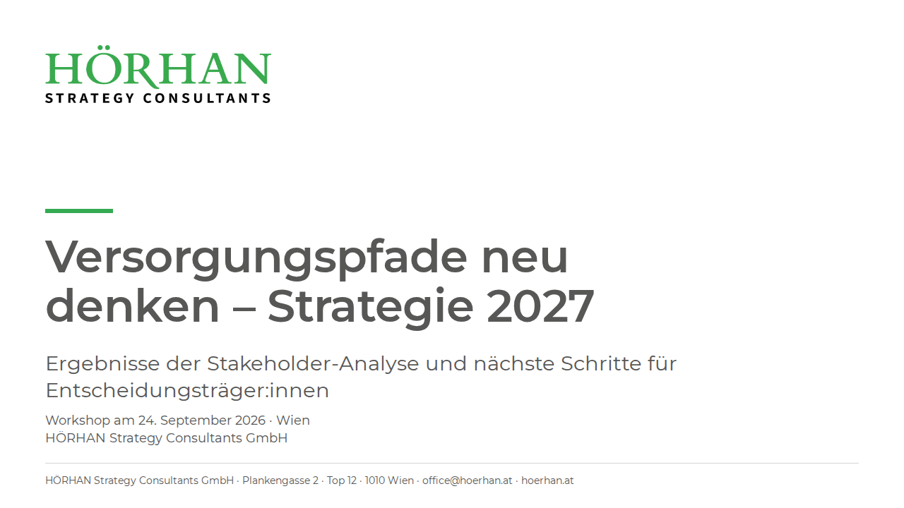
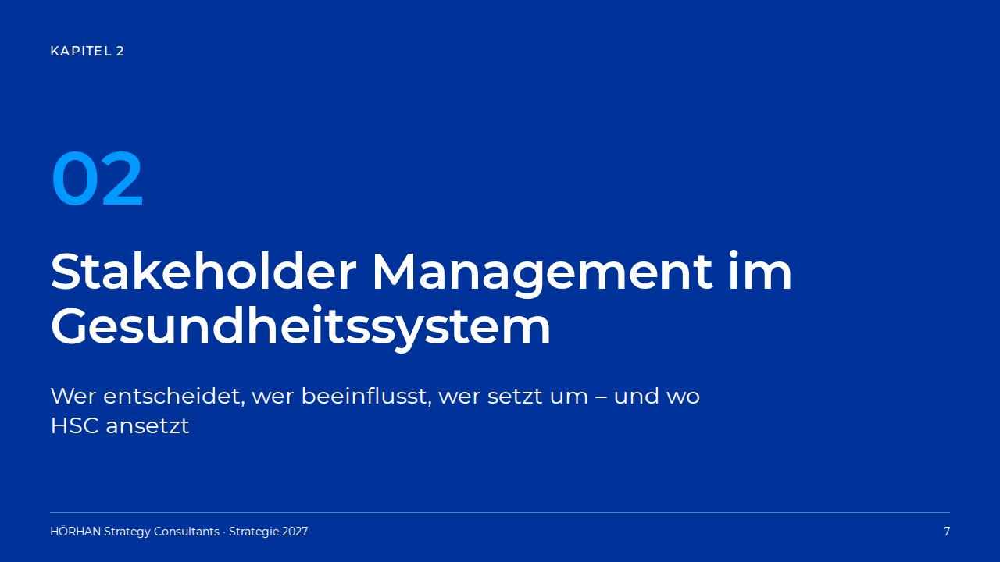
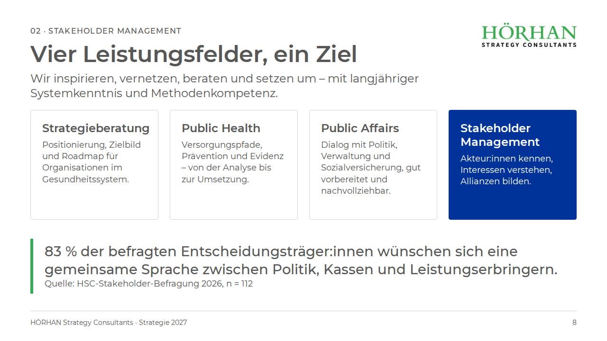
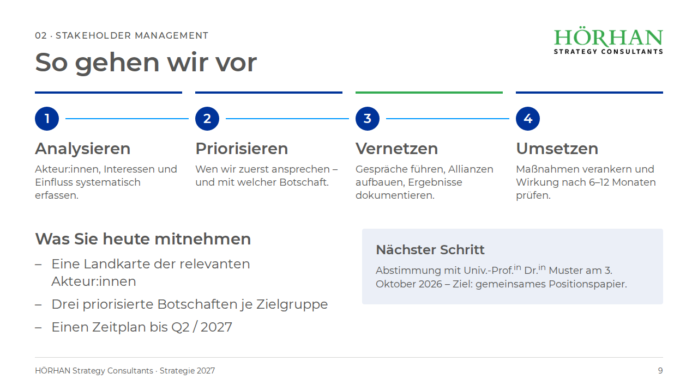

HSC · Design System
HÖRHAN Strategy Consultants — Folien, Handouts und Dokumente. Stand 17.09.2026, Quelle: Styleguide vom 18.02.2026.
Kennzeichnung im ganzen Paket: HSC steht so im Styleguide · HSC-Doku aus der Formatierung des Styleguide-Dokuments abgelesen · abgeleitet von uns aus HSC-Werten abgeleitet, nicht HSC-freigegeben · Vorschlag keine HSC-Vorgabe vorhanden, unser Vorschlag
Klar, sachlich, grün.
HÖRHAN Strategy Consultants (HSC) berät im Gesundheitssystem: Strategieberatung / Public Health / Public Affairs / Stakeholder Management. Das Erscheinungsbild ist bewusst schlicht: eine Schrift, eine Textfarbe, ein Grün als Hauptfarbe und zwei Blautöne für Grafik. Wenig Farbe, viel Weiß, klare Reihenfolge.
| Name | HÖRHAN Strategy Consultants — im Fließtext mit HÖRHAN in Versalien, so schreibt es der Styleguide selbst. Kurzform: HSC. Firmierung: HÖRHAN Strategy Consultants GmbH. HSC-Doku |
|---|---|
| Claim / Leitsatz | „Wir inspirieren, vernetzen, beraten und setzen um – mit langjähriger Systemkenntnis und Methodenkompetenz.“ (Beispielsatz im Styleguide; kein offizieller Claim festgelegt) HSC-Doku |
| Leistungsfelder | Strategieberatung / Public Health / Public Affairs / Stakeholder Management HSC |
| Logo | Wortmarke: „HÖRHAN“ in Grün (Serifenschrift, im Logo gemessen #39AA4E), darunter „STRATEGY CONSULTANTS“ in Schwarz, gesperrt. Datei: assets/hsc-logo.png (1805 × 462 px, transparenter Hintergrund; aus der Kopfzeile des Styleguide-Dokuments). Nur auf Weiß einsetzen — der schwarze Zusatz ist auf Dunkelblau nicht lesbar; eine Weiß-Variante liegt uns nicht vor. HSC-Doku |
| Firmenangaben | HÖRHAN Strategy Consultants GmbH · Plankengasse 2 · Top 12 · 1010 Wien · office@hoerhan.at · +43 676 5504477 · hoerhan.at · UID ATU78495969 · FN 587070 p. (Bankverbindung steht in der Word-Fußzeile, gehört aber nicht in Folien und Handouts.) HSC-Doku |
| Produkte | Präsentationen (16:9, 1280 × 720 px Bühne) · Handouts und Dokumente (A4) · Textprodukte, die dem Styleguide für Mikrotypografie folgen |
Grau trägt den Text, Grün ist die Marke, Blau ist Grafik.
Der Styleguide legt drei Textfarben und drei Grafikfarben fest. Alles andere hier ist aus diesen Werten gemischt und entsprechend gekennzeichnet.
Textfarben HSC
#575756 · --hsc-textFließtext, Überschriften 2–4, Kicker, Fußzeile. Die Arbeitsfarbe für alles Lesbare.#34AB52 · --hsc-greenHauptfarbe. Überschrift 1, Balken bei Merksätzen, Titel-Akzent. Nicht für kleinen Text — siehe Kontrast.#FFFFFF · --hsc-whiteText auf Dunkelblau; zugleich der Hintergrund aller hellen Flächen.Grafikfarben HSC
#003399 · --hsc-blueKapiteltrenner, gefüllte Boxen, Schrittziffern, Balken über Prozessschritten. Mit weißem Text.#0099FF · --hsc-blue-lightZweite Grafikfarbe: Konnektoren, Kapitelziffer auf Dunkelblau, Diagramm-Zweitfarbe.#FFFFFFHintergrund.Abgeleitete Farben abgeleitet, nicht HSC-freigegeben
Für Linien und ruhige Flächen, die der Styleguide nicht vorsieht. Alle vier sind Mischungen einer HSC-Farbe mit Weiß, kein neuer Farbton. HSC sollte sie freigeben oder durch eigene Werte ersetzen.
#D5D5D4 · --hsc-lineGrau 25 % auf Weiß. Boxrahmen, Trennlinien, Fußlinie — immer 1 px.#F4F4F3 · --hsc-surfaceGrau 8 % auf Weiß. Ruhige Box ohne Rahmen.#EBF7EE · --hsc-green-tintGrün 10 % auf Weiß. Merksatz-Fläche, Hinweis.#EBEFF7 · --hsc-blue-tintDunkelblau 8 % auf Weiß. Hervorgehobene Box („Nächster Schritt“).Kontrast nach WCAG 2.1 (geprüft am 17.09.2026)
Gerechnet nach der WCAG-Formel für relative Leuchtdichte. AA verlangt 4,5:1 für normalen Text und 3:1 für großen Text (ab 24 px normal oder 18,7 px fett) sowie für grafische Elemente.
| Kombination | Verhältnis | Normaler Text (4,5:1) | Großer Text / Grafik (3:1) | Folge für das Design |
|---|---|---|---|---|
| Grau #575756 auf Weiß | 7,23 : 1 | AA | AA | Standard für alles Lesbare. |
| Grau auf Grün-Tint / Fläche / Blau-Tint | 6,57 · 6,57 · 6,28 : 1 | AA | AA | Text in getönten Boxen bleibt Grau. |
| Weiß auf Dunkelblau #003399 | 10,86 : 1 | AA | AA | Dunkelblau ist die einzige Farbfläche, die Text tragen darf. |
| Dunkelblau auf Weiß | 10,86 : 1 | AA | AA | Auch als Textfarbe möglich (z. B. Links), im Styleguide aber nur als Grafikfarbe vorgesehen. |
| Grün #34AB52 auf Weiß | 2,96 : 1 | nein | knapp nein (3,0 nötig) | Kein Fließtext in Grün. Grün nur, wo die Information auch ohne die Farbe erkennbar ist: Überschrift 1 / Titel ab 48 px, Balken, Markierung. Der Styleguide selbst setzt Beispiele in 10 pt Grün — das verfehlt AA deutlich; offener Punkt für HSC. |
| Weiß auf Grün | 2,96 : 1 | nein | nein | Keine grünen Boxen oder Buttons mit weißem Text. |
| Weiß auf Hellblau #0099FF | 3,00 : 1 | nein | AA (exakt an der Grenze) | Hellblau nicht als Textfläche; als Konnektor, Linie und Diagrammfarbe. |
| Hellblau auf Dunkelblau | 3,62 : 1 | nein | AA | Große Kapitelziffer (96 px) auf dem Trenner ist in Ordnung; kein kleiner Text. |
| Grün auf Grau | 2,44 : 1 | nein | nein | Grün und Grau nie aufeinander legen. |
.hsc-title--green), der Balken vor Merksätzen, die Markierung des aktuellen Prozessschritts, das Logo. Nicht erlaubt: Fließtext, Beispiele in 10 pt, Text unter 48 px, weißer Text auf Grün.Montserrat — und sonst nichts.
„Als HSC-Schriftart kommt in HSC-Dokumenten ausschließlich Montserrat zur Anwendung. Dieser Font ist bei sämtlichen Texten und Präsentationen zu verwenden.“ HSC Die Schriftdateien liegen unter assets/ (SIL Open Font License 1.1, Lizenztext OFL-Montserrat.txt). Fallback nur für den Notfall: Arial.
Schnitte im Paket
| Schnitt | Gewicht | Einsatz | Muster |
|---|---|---|---|
| Regular | 400 | Fließtext, Überschrift 1 + 2 (im Word-Dokument nicht fett) | Gesundheitssystem, Methodenkompetenz |
| Italic | 400 kursiv | Betonung im Fließtext, Quellenangaben | Quelle: HSC-Befragung 2026 |
| Medium | 500 | Kicker, Labels, Merksatz auf Folien Vorschlag | 02 · Stakeholder Management |
| SemiBold | 600 | Überschrift 3 + 4, Folientitel, Boxtitel — „fett“ im Sinn des Styleguides HSC-Doku | Vier Leistungsfelder, ein Ziel |
| SemiBold Italic | 600 kursiv | selten: betonte Zwischenzeile | Best Practice |
| Bold | 700 | Reserve; nur wenn 600 zu leicht wirkt (große Ziffern) | 02 |
Dokumente (A4) — Größen in pt HSC
| Ebene | Größe | Form | Token | Muster |
|---|---|---|---|---|
| Überschrift 1 | 20 pt | Versalien, Grün, Abstand davor 18 pt HSC-Doku | --hsc-doc-h1 | Überschrift 1 |
| Überschrift 2 | 16 pt | Versalien, Grau, Abstand davor 12 pt HSC-Doku | --hsc-doc-h2 | Überschrift 2 |
| Überschrift 3 | 12 pt | fett, Laufweite +1 pt HSC-Doku | --hsc-doc-h3 | Überschrift 3 |
| Überschrift 4 | 10 pt | fett HSC-Doku | --hsc-doc-h4 | Überschrift 4 |
| Fließtext | 10 pt | linksbündig, Zeilenabstand 1,15, Absatzabstand 6 pt | --hsc-doc-body | Fließtexte sind linksbündig gehalten. |
| Fußzeile | 9 pt | zentriert HSC-Doku | --hsc-doc-footer | HÖRHAN Strategy Consultants GmbH | Plankengasse 2 | Top 12 | 1010 Wien |
Folien (1280 × 720 px) — Größen in px Vorschlag
Der Styleguide nennt nur Word-Größen. Für Folien schlagen wir eine feste Umrechnung vor: Folien-px = Word-pt × 2,4. Damit bleibt die Hierarchie 20 : 16 : 12 : 10 erhalten, und der 10-pt-Fließtext wird zu 24 px — das entspricht 18 pt auf einer 13,33-Zoll-PowerPoint-Folie und ist aus fünf Metern lesbar. Ergänzt um drei Folien-Größen, die Word nicht kennt (Kicker, Fußzeile, Kapitelziffer).
| Rolle | Word | Folie | Form | Token | Muster (1:1) |
|---|---|---|---|---|---|
| Folientitel | 20 pt | 48 px | SemiBold, Grau; Versalien optional (--caps) | --hsc-slide-h1 | Folientitel |
| Untertitel / Abschnitt | 16 pt | 38 px | Regular oder SemiBold | --hsc-slide-h2 | Untertitel |
| Schritt-Titel, Merksatz | 12 pt | 29 px | SemiBold bzw. Medium | --hsc-slide-h3 | Schritt-Titel |
| Fließtext, Aufzählung, Boxtitel | 10 pt | 24 px | Regular; Boxtitel SemiBold | --hsc-slide-body | Fließtext auf der Folie |
| Nebentext in Boxen | — | 18 px | Regular | --hsc-slide-small | Nebentext in Boxen |
| Kicker (Kapitelname) | — | 16 px | Medium, Versalien, Laufweite 8 % | --hsc-slide-kicker | 02 · Kapitelname |
| Fußzeile, Seitenzahl | — | 14 px | Regular | --hsc-slide-footer | HÖRHAN Strategy Consultants · Strategie 2027 |
| Titel auf Titelfolie / Trenner | — | 64 px | SemiBold | --hsc-slide-title-slide | Titel |
| Kapitelziffer | — | 96 px | SemiBold, Hellblau auf Dunkelblau | --hsc-slide-display | 02 |
Ein Raster, bis HSC eines festlegt.
Der Styleguide erwähnt ein Gestaltungsraster („Platzierung und Gewichtung von Logo, Bild und/oder Text … Bildgrößen, Spaltenbreiten, Satzarten und Schriftgrößen“). Laut Kommentar von HSC vom 18.02.2026 existiert es noch nicht. Alles in diesem Abschnitt ist deshalb Vorschlag — mit Ausnahme der Seitenränder, die aus der Word-Vorlage stammen.
Folie 1280 × 720 px
Rand 64 px links, rechts, oben · 12 Spalten à 74 px, Spaltenabstand 24 px · Kopfzone 0–152 px · Inhalt 168–632 px (bei Untertitel ab 232 px) · Fußlinie 656 px · Fußzeile 672 px.
Vier Boxen = je 3 Spalten (268 px), drei Boxen = je 4 Spalten (366 px), zwei Spalten = je 6 (564 px). Tokens: --hsc-slide-*.
Dokument A4 HSC-Doku
Seitenränder oben 2,5 cm · links/rechts 2,5 cm · unten 1 cm · Kopfzeile 1 cm von der Kante · Fußzeile 2 cm von der Kante (aus sectPr der Word-Vorlage).
Kopfzeile Logo zentriert, 37,6 mm breit.
Fußzeile zentriert, 9 pt, Angaben mit „ | “ getrennt: Firmierung | Adresse; UID | FN; Kontakt. Ohne Bankverbindung.
Satzspiegel 16 cm breit, einspaltig, Fließtext linksbündig (Flattersatz). Listeneinzug 1,27 cm.
Vorschlag Bilder laufen über die volle Satzspiegelbreite oder über die Hälfte (7,8 cm) mit Text daneben; Tabellen mit 1-px-Linien in --hsc-line, Kopfzeile Grau fett.
Sieben Bausteine, mehr braucht es nicht.
Alle Klassen stehen in components.css, Präfix hsc-. Die Folienbausteine sind hier im Maßstab 1:1 gezeigt, also so groß wie auf der Folie.
Folien-Chrome: Kicker, Logo, Fußlinie, Fußzeile, Seitenzahl
Jede Inhaltsfolie hat dasselbe Gerüst: Kicker oben links (Kapitelnummer · Kapitelname), Logo oben rechts (200 px), Fußlinie 1 px, Fußzeile links („HÖRHAN Strategy Consultants · Projektname“), Seitenzahl rechts. Titelfolie: Logo groß (320 px), grüner Balken, Titel 64 px. Kapiteltrenner: Dunkelblau, kein Logo (siehe Marke), Ziffer Hellblau 96 px.
Box. Weiß, 1-px-Rahmen in --hsc-line, Radius 4 px, Innenabstand 24 px. Boxtitel 24 px SemiBold (≙ Überschrift 4), Text 18 px. Bei ein bis zwei Boxen je Reihe .hsc-box--lg (Titel 29 px). Höchstens eine Box je Reihe darf gefüllt sein (--blue oder --tint) — die, auf die es ankommt.
Prozessschritte. Balken 4 px Dunkelblau oben, Ziffer im dunkelblauen Kreis (44 px), Hellblau-Konnektor 2 px zwischen den Ziffern. Titel 29 px SemiBold, Text 18 px. Aktueller Schritt: .hsc-step--current färbt nur den Balken grün; die Ziffer bleibt Dunkelblau, weil Weiß auf Grün den Kontrast verfehlt.
- Eine Landkarte der relevanten Akteur:innen
- Drei priorisierte Botschaften je Zielgruppe
- Politik und Verwaltung
- Sozialversicherung
- Einen Zeitplan bis Q2 / 2027
Wir inspirieren, vernetzen, beraten und setzen um – mit langjähriger Systemkenntnis und Methodenkompetenz.
HÖRHAN Strategy Consultants
Aufzählung. Gliederungszeichen ist der Gedankenstrich „–“ — der Styleguide nennt ihn ausdrücklich als Gliederungszeichen in Aufzählungen. Keine Punkte, Häkchen oder Pfeile. Zweite Ebene eingerückt, 18 px. Groß-/Kleinschreibung nach den Schreibregeln (Abschnitt 09). Merksatz / Zitat. Grüner Balken 6 px links, Text 29 px Medium, Quelle 18 px darunter. Mit .hsc-merk--tint auf Grün-Tint-Fläche. Auf Dunkelblau wird der Balken Hellblau.
Fußzeile Folie. Links: „HÖRHAN Strategy Consultants · Projekt- oder Deckname“, rechts Seitenzahl, beides 14 px Grau; Fußlinie 1 px. Auf der Titelfolie steht stattdessen die Kurzfassung der Firmenangaben (Firmierung · Adresse · E-Mail · Web). Fußzeile Dokument. Wie in der Word-Vorlage: zentriert, 9 pt, drei Zeilen (Firmierung | Adresse · UID | FN · Kontakt), ohne Bankverbindung.
Vier Folien, die das System zeigen.
Als HTML (öffnen, kopieren, Text tauschen) und als PNG. Inhalte sind erfunden und dienen nur der Demonstration.




Die A4-Seite, wie HSC sie setzt.
Die Klasse .hsc-doc bildet die Word-Vorlage nach: Montserrat 10 pt, Überschriften 20 / 16 / 12 / 10 pt, Logo in der Kopfzeile, dreizeilige Fußzeile. Verkleinert dargestellt (62 %).
Stakeholder-Analyse Versorgungspfade
In diesem Dokument fassen wir die Ergebnisse der Befragung von Entscheidungsträger:innen zusammen und leiten daraus Empfehlungen für die Strategie 2027 ab.
Ausgangslage
83 % der Befragten wünschen sich eine gemeinsame Sprache zwischen Politik, Kassen und Leistungserbringern. Die Erhebung fand von März bis Mai 2026 statt (n = 112).
Zusammengesetzte Begriffe
Wortzusammensetzungen werden zusammengeschrieben, wenn sie dadurch nicht zu umständlich zu lesen sind:
- Gesundheitssystem, Methodenkompetenz, Projektmanagement
- Patient:innen-Nutzen, aber: Patient:innenpfade
Nächster Schritt
Abstimmung mit Univ.-Prof.in Dr.in Muster am 3. Oktober 2026 – Ziel ist ein gemeinsames Positionspapier.
Wir inspirieren, vernetzen, beraten und setzen um – mit langjähriger Systemkenntnis und Methodenkompetenz.
Was das System zusammenhält.
Do
- Montserrat für alles — Titel, Text, Ziffern, Fußzeile.
- Text in Grau #575756; Weiß nur auf Dunkelblau.
- Grün als Marke: Überschrift 1, Balken, Titel-Akzent, Logo.
- Dunkelblau als einzige Fläche, die Text trägt; Hellblau für Linien, Konnektoren, Kapitelziffer.
- Ein Gedanke pro Folie, höchstens zwei Bausteine im Inhaltsbereich.
- Gedankenstrich „–“ als Gliederungszeichen in Aufzählungen.
- Logo nur auf Weiß, immer mit Freiraum, nie verzerrt.
- Abgeleitete Farben (Linie, Fläche, Tints) nur für Linien und ruhige Flächen.
- Gendern mit Doppelpunkt, Titel mit hochgestellter Endung — siehe Schreibregeln.
Don't
- Keine zweite Schrift, auch nicht für Zahlen oder Zitate.
- Kein grüner Fließtext, kein Text unter 48 px in Grün, kein weißer Text auf Grün.
- Kein Text auf Hellblau; Hellblau und Grün nie nebeneinander als Bedeutungsträger.
- Keine Schatten, Verläufe, 3D-Effekte, keine Fotos hinter Text.
- Keine Aufzählungspunkte (•), Häkchen oder Deko-Icons.
- Nie mehr als eine gefüllte Box je Reihe.
- Kein Logo auf Dunkelblau oder auf Fotos, keine Umfärbung der Wortmarke.
- Keine Bankverbindung in Folien oder Handouts.
- Kein Genderstern, kein Binnen-I, kein Schrägstrich-Gendern — HSC gendert mit Doppelpunkt.
- Keine Bindestriche als Gedankenstriche.
Mikrotypografie und Gendern — so schreibt HSC.
Zusammengefasst aus dem Styleguide „Mikrotypographie“ vom 18.02.2026 HSC. Beispiele stehen in Grün, wie im Original — bewusst, obwohl Grün in dieser Größe den Kontrast verfehlt (siehe 02); in eigenen Dokumenten Beispiele lieber kursiv setzen. Gilt für alle HSC-Texte: Folien, Handouts, Dokumente, Web. Adaptionen sind möglich, sollen aber im Team besprochen und festgehalten werden.
Zusammengesetzte Wörter und Bindestriche
- Zusammensetzungen werden zusammengeschrieben, solange sie gut lesbar bleiben: Gesundheitssystem, Methodenkompetenz, Projektmanagement
- Leidet die Lesbarkeit oder sollen Teile hervorgehoben werden, kommt ein Bindestrich: Reverse-Transkriptase-Hemmer, LDL-Cholesterinwert
- Bei gegenderten Zusammensetzungen: Patient:innen-Nutzen (schlecht lesbar wäre „Patient:innennutzen“), aber Patient:innenpfade, Patient:innenlenkung
- Doppelnamen und Ergänzungsstriche bei gleichem Anfang oder Ende: Max-Michael Muster-Master · Beteiligungs- und Innovationsprozesse · Krankenhauspersonal und -equipment
- Englisch + Deutsch wird mit Bindestrich verbunden; rein englische Begriffe stehen mit Leerzeichen: Social-Media-Beauftragte, aber Social Media. Sonderfall Win-Win-Situation (eingebürgert, daher mit Bindestrichen).
- Zusammensetzungen aus mehreren Substantiven werden in jedem Teilstück großgeschrieben: HIV-Positive, Blut-Hirn-Schranke
Gedankenstriche
- Der Bindestrich (-) ersetzt nie den Gedankenstrich (–).
- Gedankenstrich bei Satzeinschüben statt Komma: „Wir inspirieren, vernetzen, beraten und setzen um – mit langjähriger Systemkenntnis und Methodenkompetenz.“
- Als Ergänzungsstrich: Die Lunge – ein Organ im Fokus
- Als „bis“-Strich ohne Leerzeichen: 1844–1906
- Als Minuszeichen in Rechnungen und als Gliederungszeichen in Aufzählungen.
Leerzeichen
- Vor und nach dem Gedankenstrich steht ein Leerzeichen — außer er ersetzt „bis“: um – mit, aber 1844–1906
- Beim Schrägstrich setzt HSC Leerzeichen (im Print müsste man darauf verzichten): Strategieberatung / Public Health / Public Affairs / Stakeholder Management
- Vor Prozentzeichen, Maßeinheiten, Symbolen und Rechenzeichen (%, g, km, EUR, &, §, <, >, =) steht ein Leerzeichen: „83 % der über 60-Jährigen fühlen sich psychisch fit.“ Sonderfall: 10%ige Steigerung
- Abkürzungen wie z.B. schreibt HSC ohne Leerzeichen. Im Fließtext ist die ausgeschriebene Form besser.
- Auslassungspunkte: Ersetzen sie ein Wort, stehen Leerzeichen davor und danach (in Zitaten mit eckigen Klammern); am Satzende werden sie angehängt: „Es ist elementar, dass wir zusammenarbeiten […], um die Gesundheitslandschaft zu gestalten.“ · Mit schweren Folgen für das österreichische Gesundheitssystem…
- Bei Bindestrichen keine Leerzeichen, außer das Satzgefüge verlangt es: Verhaltenskodex-Verfahren · Wissenserweiterung und -transfer
- Klammern stehen direkt am Wort: Künstliche Intelligenz (KI)
Groß- und Kleinschreibung, Satzzeichen in Aufzählungen
- Aufzählungspunkte beginnen groß, wenn sie ein vollständiger Satz sind (dann mit Schlusspunkt) oder mit einem Substantiv beginnen: Bei der Therapie ist es wichtig, regelmäßig mit den Patient:innen zu sprechen. · Medikamentenausgabe im Spital
- Alle anderen Punkte beginnen klein: neue, innovative Therapieoptionen
- Englische Wörter im Fließtext klein: business as usual; Ausnahme bei gebräuchlichen Begriffen: Best Practice, Off-Label-Use
- In kolumnenartigen Aufzählungen sind keine Satzzeichen nötig: HÖRHAN Strategy Consultants bietet – Strategieberatung – Public Health – Public Affairs – Stakeholder Management
Gendern
- HSC gendert im Normalfall mit Doppelpunkt: Ärzt:innen, Akteur:innen
- Für Lesbarkeit und Abwechslung sind neutrale Begriffe möglich: Teilnehmende, Forschende
- Ebenso beide Formen: Ärztinnen und Ärzte, Forscherinnen und Forscher
- Englische Begriffe werden nicht gegendert: Stakeholder, Key Opinion Leader
- Übergeordnete, neutral gebrauchte Begriffe bleiben ungegendert: Partner, Sponsor
- Titel werden gegendert, die Endung wird hochgestellt: Prim.a · Univ.-Prof.in · Dr.in · Mag.a (in HTML mit
<sup>) - Bezieht sich ein Wort nur auf eine Gruppe eines Geschlechts, wird nicht gegendert.
Schreibweise des Firmennamens HSC-Doku
- Im Fließtext: HÖRHAN Strategy Consultants (HÖRHAN in Versalien, so im Styleguide); Kurzform HSC; Firmierung HÖRHAN Strategy Consultants GmbH.
- Fußzeile Dokument: Angaben mit „ | “ getrennt. Fußzeile Folie: mit „ · “ getrennt Vorschlag.
HSC Design System · erstellt von THE FIN / Roiss-Weiss GmbH für HÖRHAN Strategy Consultants · Montserrat: The Montserrat Project Authors, SIL Open Font License 1.1 · Logo und Styleguide: HÖRHAN Strategy Consultants GmbH.